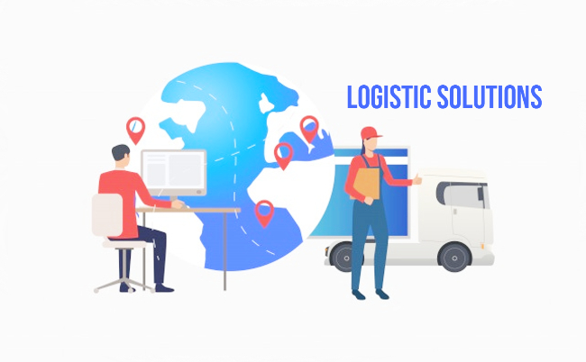

Here are the top 6 advantages of outsourcing logistics
Outsourcing logistics is all the rage these days. But it’s not because it’s a super easy way to save money. It’s because it enables companies to grow, while keeping their costs under control. This, in turn, lets companies pass the savings on to their customers.
Here below you can find the main advantages of outsourcing logistics and how Elite logistics can help you achieve better results in a more efficient way.
Reduction of indirect costs
Outsourcing your logistics to another partner lets you transform your direct costs linked to the logistics operation into variable costs. With logistics solutions, the program pays for spaces and warehouses, technology and machines, staff and safety equipment, allowing the consumer to streamline his expenses while redirecting these resources to the development of the business.
Improved flexibility
Both in regards to increasing the volume and availability of our services as well as when it comes to resizing your staff, we will have the capability to offer a considerable amount of flexibility due to our ability to arrange each place or staff member depending on your specific needs.

Expertise and know-how
To have a partnership with a 3PL means following the evolution of your business. We will supply our skills and vision, helping you direct your efforts elsewhere. Meanwhile, your internal processes or resources will not be necessary anymore, and we will lower the cost of management, research, and education in the process.
Performance improvement
An individual is considered to be a favorable partner due to his knowledge and experience on a specific niche along with technology. By means of this knowledge and skill set, he can be relied on for fulfilling tasks efficiently. Furthermore, as an international partner, we can suggest customized solutions for different geographic areas.
Customs assistance
By using a global network, your clients can more easily start building their business in new nations. They can use customs advice, assess the needs of exporting their products, and use an international network of facilities in destination countries.
You can concentrate on your core business
You can focus exclusively on developing your concept by outsourcing logistics operations management, letting us take care of matters related to transporting your products.
In summary, the advantages of outsourcing logistics are that it can save costs and it can help improve. With the support of technology, outsourcing logistics is the best way to grow your business, which is why many companies choose to outsource their logistics.